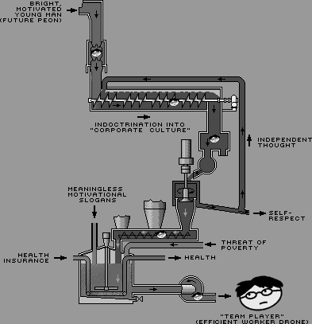

Home Blogs Bathroom Break, Boss? Week of 17 March 2002

Week of 17 March 2002
Bathroom Break, Boss?
Well, they've finally gone and done it. At work they're now requiring everyone to sign in and out on a white board whenever we go on lunches or....yes...bathroom breaks. Damn...I haven't had to do that since my data entry peon days. I know there's a legitimate reason for it -- the nature of the work we do demands that people be where they're supposed to be -- but god damn...why don't they just give us collars like on the "Gamesters of Triskelion" episode of Star Trek?
🚻
Granted, I had today off (YAY!), but here's a prime example of human stupidity, or two.
We open at ten thirty in the morning. We are also in snow-bird central. For the uninformed, in Arizona during the winter, we get lots of old people who stay until it gets to be typical Arizona oven-like temperatures, and then they go back up north. Those old people are called snow-birds. When I lived in Texas, we had the same thing, but they were called Winter Texans, and were not nearly as stupid as the ones that migrate to Arizona. Anyways.
It's 10:20 one morning, and I'm taking down the chairs in the lobby. Already, we have three old ladies standing outside the door (one of which who had been there for at least ten minutes), which clearly states that we do not open for another ten minutes. So, feeling nice, I walk over to the door, and say loud enough for them to hear that we don't open until 10:30. Two of them start yelling at me to open the doors anyway, and I tell them that I can't. So they say that they'll just have to go to Albertson's for chicken. They fail to realise that by the time they get to the nearest Albertson's, we'll have been opened five minutes.
So, 10:30 rolls around, and the lady comes into the store. To buy a large cole slaw. She waited at least twenty minutes to buy something that she could have made herself in five.
Later on that day, a man comes in with his child. You see, there are two classifications of people under the age of 13. Bratlings and children. Bratlings are ill-behaved, screaming, messy things with no respect for others, and certainly not their parents. Children, on the other hand, are decent human beings. There seems to be a shortage of children these past few years.
But back to the story. He comes in, orders his food, sets his five year old up on a stool that has a potential for small children and bratlings to fall off, so their parents can sue us, and starts jabbering away on his cellphone. His food is ready, and repeated attempts of my saying "Sir...sir...sir, your food is ready," in an above-average volume for two minutes do nothing. Thanks to being a three-year theatre geek and a father who was more deaf than not, I have an amazingly loud voice when I want it to be. I take a deep breath, and in the type of voice that you have to use to be heard by your nearly-deaf father with the television turned up loud enough to hear across the house, and you're three feet away from him, say "SIR!" He turns around and glares at me. "Your food is ready. Would you like any butter, honey, or dipping sauces for your strips?" And he gives me the Quasi Look of Death. "Do you yell at everyone like that?" His tone is bitter, harsh. I smile sweetly and flutter my eyelashes a bit. "No sir, only when they don't hear me after I've been trying to tell them their food is ready for the past minute and a half. I'm sorry if I was too loud, and I'm sorry that I had to interrupt your phone call. Do you need anything else?" Stated cheerfully and apologetically. He looks at me, amazed that someone in a uniform, standing behind the counter, can be anything more than a rude, trained monkey.
🚻
Inventory
In January 1986, I temporarily interrupted a period of unemployment by taking an inventory job in Seattle. A team of us went from store to warehouse to office counting objects and noting the numbers on clipboards. This was not so difficult. Large objects were easy to begin with, and small things like screws and wingnuts, you could guesstimate. I mean, who's checking?
On the morning of January 28, we were working at a consumer electronics store. We counted stereos, then moved on to televisions. There was a wall of large color televisions stacked about ten high and twenty wide, all tuned to the same channel. That would normally take a couple seconds to count and note - 200 color televisions. Except some news show came on, a rocket launch, so we paused a minute to watch. It was a Space Shuttle launch, the Challenger. Maybe I'm forgetting something big, but it seems to me that was the greatest national media tragedy to hit the United States until last September 11. And we saw it 200 times over.
🚻
Musings of an ex-government employee
Currently I'm doing freelance design work, but now and then I yearn for one of my previous jobs, a cushy office position working for the government. When the time is right, I intend on getting another one! You get benefits, paid vacation and sick days, paid holidays, and sometimes even trips and use of the company car and all that kind of stuff. It rocks! Sure, there are things about working for the man that suck just like with any other job, but overall it's not so bad. My favorite thing was shredding papers...and man, did I shred a lot of documents! Hope there was nothing "important" in there, if you get my drift!
The computers left a lot to be desired, though. The PC I had to use was from the late 80's, and had a monochrome green and black screen. One fine day, there was a power surge, and the thing blew up on me. Black smoke billowed out from underneath my desk, and I had to run for cover. That makes me question the spending there. We moved down the hallway once, and it cost thousands of dollars to hire someone to move that crap. I know us employees aren't paid to do it, but I think we could have moved that stuff a few hundred feet! They could have taken that money and bought me a computer with a mouse! Oh well. Maybe I'll point that out the next time I'm drinking Folgers and grimacing at a photo of our president on the wall.
🚻
To Serve Mankind
When I was eleven or twelve my crazy aunt took me and my brother to visit a seer. My aunt didn't really make it clear where we were going to begin with because if my dad ever found out, he would have kicked her kooky ass out of the house. All she told us was that we were going to see her good friend Zaida. "Za-eeeee-daaaaah" I repeated. Cool.
We rolled up to a house that looked pretty much like every other house in the neighborhood. Some kid greeted us at the door and led us to a dim room that was far too warm and far too smokey, the remnants of incense and candles everywhere. "Welcome," Zaida purred. Her dark, waxy skin slid across her bony face as she cracked an all-too-wide grin. I smiled weakly and stared up at the myriad of Jesuses and Marys that adorned the walls and endless shelves of the cramped space. We shuffled in, my aunt kissed Zaida's hand and my head began to swim. Too hot, too weird. I closed my eyes and tried to stop the room from spinning. The rolling murmer of Zaida and my aunt praying was mesmerising, my altered state interrupted intermittently by a television in the other room. Suddenly...
"Which one of you... builds thingssss?" I heard Zaida ask.
"He does" I drowsily replied, nudgung my brother. He had been building toys out of wood all summer long.
"An architect, I think," Zadia's husky voice whispered. "Yes, he will be an architect."
I wasn't looking at him directly, I'm not sure what I was looking at, but I heard my brother's disappointment. From the other side I heard my aunt's reverent awe at Zaida's powers of presience.
"And you," she pinned me with her dark shiny eyes, "you serve God, yes?" It was true, I did. I was an altar boy. How the hell did she know that? The look on my aunt's face was asking the same question.
"You will continue to serve... Yes, you will always be in the service of others."
I will always be in the service of others... I thought to myself.
I will always be... FUCK THAT!
The room snapped into focus. My aunt was hunched down next to Zaida, hugging her and thanking her. My brother was still sitting on the floor next to me pondering his future as an architect. Zaida was smiling at the cieling. Who the hell was this woman? Why were we here? I told my aunt that we had to go. No response. I tried detaching her from Zaida. No luck. I mentioned that my dad would be home soon and would wonder where we were. My aunt kissed Zaida on the cheek and took us home.
I never told my dad where we were or what happened. I don't think my brother ever remembered that place either. But I did. "You will always be in the service of others..." Those words kept me up at night. I'd show that crazy bitch what's what. I was destined for far greater things than Zaida could even conceive of! What the hell did she know?
Years later, in highschool, I got my first job. I was a sales associate at Gap Kids.
🚻
My 2nd day of training went well. Tomorrow I will be thrown to the Friday night wolves! Ahhh!
My 1st job was at a movie theater, not a big one, an art theater. It had been closed and was renovated so it was a big deal for it to open. I started as the ticket selling/concession/peon type and was eventually trained as a projectionist and doing manager stuff without the title or pay.
Being a projectionist took at least ten years off my life. More than once a film was supposed to start at 7pm Friday and the print would arrive at 6:30pm. I got pretty fast at splicing, I tell ya!
At my 2nd projection job, downtown at a art/repertory theater we ran 16MM. It was the sort of thing where you had to stay with it. It'd jump track and burn if you just looked at it funny. The color 16mm were worse than B&W, more coating maybe? This place was one of two cinemas left in the city that did not run on a platter system. This meant the film was split into two parts and on two huge reels, which were run on two separate projectors pointed at the same screen. At the "change-over" you did just that and changed over to the next projector. The reels usually had about 2-3 small size film reels worth on them. This I would have to left above my head and get the think as my tiny pinky finger spindle to go thru the center reel hole. It's hard to describe, just understand it was very hard. I'd be sweating and cursing like mad. That was the only point in my life I ever had much upper body strength.
At that downtown theater we had a 60 hour film marathon. 60 straight hours of movies. I ran a normal shift of it and the small reels were used instead. This meant having to sit up there with it and keep an eye on the reel the whole time. Ten years later I can finally watch films without the little change-over dot distracting me. The dot appears in the upper right corner of the screen. Once as a "hey it's time" then again when it's time to switch. That'd be if you were running two projectors.
So, I feel working at the video rental will have all the things I enjoyed about working around movies and movie lovers without taking more years off my life.
🚻
I work at a fast food place that specializes in chicken and has a weird obsession with a dead guy.
That said, I hate my job. Yet, there is nothing else close to my apartment within walking distance. Ah well.
With THAT said, if I'm risking burns and slips and falls, at least you can do is read the menu. It's not that difficult, I swear.
There will be much much complaining about the stupidity of people.
🚻
Hi Boss, Can I Pick Up Your Dry Cleaning?
Hey everyone, I got a new job duty at work! I am now assisting my boss with his pimpological work! I had to call one of his hoes today and told him that he tried to call her from his cellphone so he'll have to call her back because he is on the phone with some fricken Apple tech support guys. Life is sweet!
🚻
A Working Class Hero Is A Great Thing To Be: Part I
I have had many many jobs in my lifetime, ranging from retail services to manual labor to office temp to corporate schmuck. As I am currently unemployed I have ample time to tell you about about each and every one of them. In parts, of course.
My very first job was at Subway Sandwiches right before I went to college. It was the only job I was qualified for. This was before Subway's marketing campaign to raise the moral of their employees with the esteemed title of "Sandwich Artist", so obviously I felt like an asshole working at what amounted to a cold cut fast food joint. My brother worked at the same place, sometimes on the same shift. It was our Subway. We were the asshole brothers.
My days at Subway consisted of making sandwiches and laughing at my boss. I laughed at him when he told the customers that the meats were fresh-sliced. I laughed at him when he told the customers the bread was home made. I laughed at him when he told me and my brother that we should all get together and go to the Palladium (or "Get Laid-ium as it was called) because he and Steve Masters were "good friends" and could get us in for free. Laughing at my boss was my first lesson in the work world.
The next summer I worked as a manual labor temp. It was found though the extensive testing at the temp agency that outside of sandwich making, the only other marketable skill I possessed was manual labor. That meant moving shelving around K-Mart at midnight, slopping food at the Chevron refinery cafeteria, and my favorite job of all: working at the vegetable oil packing plant. My job at the packing plant was to screw tops on giant drums of vegetable oil. All day long I would stand stationary on a greasy floor. Drums filled with vegetable oil would roll towards me on the belt and I would screw a cap on the drum and push it down the line. It sounds pretty mundane, but the foreman would mix things up for me periodically. Sometimes I worked the boxing line for shortening. I would fold the bags inside the boxes after they had been filled.
One day I was sitting around on break shooting the shit with one of the union workers. He had greasy hair and looked like Ron Jeremy. Our conversation was brief.
Ron Jeremy Look-Alike: "Hey man, you seen the booger gallery yet?"
Me: "No."
Ron Jeremy Look-Alike: "It's in the bathroom. You should check it out."
Me: "Um...thanks. I will."
After that I made sure to completely evacuate my body every morning before I left for work.
🚻
My company is soooooo cheap...
I have to share a computer and desk and chair with another person. No this person is not sitting on my lap from 9-5, M-F... we do the same job at opposite hours. I have custody of the computer and desk from 6:45am-2:45pm, she gets them from 3-11pm. We never see each other.
Which is a good thing I guess. We're never in each other's way then. Kinda.
It bugs me when the desk isn't left for me in the way I left it. I always log out of everything and make sure there's zero clutter before I leave. So it irks me when I find abandoned tapes and news magazines and papers and pens and ketchup packets and napkins and coffee stains when I arrive in the morning.
I try to keep the personal effects to a minimum. There's my tropical fish calendar... and the mug with my baby nephew's picture on it (you've seen the mug kiosk in the malls) that i use as a pen cup... and the huge container of Clorox anti-bacterial wipes I use to sanitize the place every morning... but that's all. No toys. No office supplies. No junk. It's not my space. I guess I've just always been used to work being a second home.
This place is NOT my home.
🚻
A repost:
Work: Isn't it self-defeating for a college student when she/he is basically working in order to make enough money to pay for car insurance and gas so that he/she can use the car to drive to work? Heck, if a person does't work, there would be no need to pay for transportation to the workplace. Furthermore, if said student didn't go to school, he/she wouldn't have to pay for tuition, either. It would be even better if the student became a robot cyborg in order to not have to eat or drink. Maybe the student should just die and never have to work to pay for anything ever again. We're all headed there, anyway.
Work is for chumps. But what can you do?
🚻
Hey, we've been Blogdexed.
🚻
To minimize the likelihood of my experiencing the Dooce Effect I'm going to wait until my link to this site drops off the front page of my own blog before posting about my current employer; I'll fill the time until that happens with descriptions of past jobs.
Working at the camera shop in high school was actually not a bad job, except for the time a film projector was stolen and my boss got mad at me and wanted to hit me. In the slow times we would turn the air cannisters (used to clean camera lenses) upside down and freeze flies with the freon propellant, and line them up along the counter by the cash register. Besides the 100% discount on photo and darkroom supplies in the boss's absence, another perk was looking at everyone's processed film before they picked it up, so we saw a lot of the local housewives naked, and the exchange students, and this prissy woman rolling a joint naked on her bed.
It was a chain and I got a call one afternoon from the manager of the other store asking me to check the pictures of Mrs. X, a little old lady who was a regular customer. Were they pictures of a little white dog? he asked. No, I answered, they were beaver pictures. They were in fact the most explicit amateur porn pictures I'd ever seen at that point in my life. There had been a mix-up in the processing lab, and this other couple had come in for their pictures and complained when they got shots of Mrs. X's poodle instead.
As we were talking on the phone, Mrs. X came in the door. I told her the pictures weren't back yet, and we managed to get things sorted out without her getting shocked or anything.
🚻
I've been out of work and going to school for a while, but as of last Saturday I officially am employed again! I am working at a video rental place...donno if I should name it. It starts with a B and is a well known chain. Got it? Good.
So, I am in training now, my 2nd night of training is tomorrow. So far nothing much to bitch about. A majority of the job I am really looking forward to, especially the five free rentals per week! I like chatting with customers, I like games and movies. I will not like suggestive selling. "Can I interest you in DirectTV tonight?" That's the stuff we're going over in training tomorrow. I hate when I go to rent something and they ask that, so I will hate asking it. I live in a neighborhood where I think everyone has cable or something (except me) so they probably will just say "no thanks" or "we have it already" or something.
🚻
The Workplace #1
by Joseph Giddypuff, Obligatory Pundit
In contemplating how our brains mull over the weekday routine, it is important to consider the flotsam that the average office worker is fond of unfurling across his environment, eked out to him for the sole purpose of the worker performing his job. The quid pro quo between worker and employer builds off of the Lockean principle that an inchoate entity is somehow a protector, but, in the workplace, adds a coruscating dash of Mussolini to the mix. The purpose of this additional element is to both instill fear into the worker (causing nervous breakdowns, alcoholism and random workers to jump out of windows, the latter practice quite popular during the days of the Great Depression) and to allow impotent middle managers to laugh manically in relative anonymity from the secured bunker of the executive washroom. Unlike such traditional uses of Lockean ideology as "representative democracy," the workplace environment can be taken away at any time and for any reason. In most states, an employment relationship is "at will," a term coined by Professor Thomas Gilgensoon, Emeritus, a pro-business lobbyist who was, for whatever reason, a staunch Lost in Space fan. For whatever reason, the term took, encouraging corporations of every caliber that the worker is utterly disposable, that the only pulse that matters during the day is the questionable rivulet passing through the dark corporate heart.
🚻
Man, I wish work sucked right now because I m getting really antsy about having my words appear next to the Drone-o-matic™! But alas, my only complaint right now is that I m really drained after finals and I lack the creative energy to work at the moment. Needless to say, this company has its own Corpulent, Lazy Ass Co-worker, but lucky for me, his office is all the way on the other side of the building and after the last collaborative project, he s none too thrilled about moseying on over to the programming/creative department because clearly he s not too popular here.
At any rate, that leaves me without a recent tale of my crazy work antics therefore I have no choice but to dig into my grab bag of past work-related drama. *Thinks back for a moment returns 10 minutes later*
In high school I worked at a photo studio. It s one of those places that offer a million wallets for a really good price (not a gazillion dollars like those evil, baby places). It is the sanctuary of the self-absorbed teen who wants more pictures than he or she knows what to do with. Perhaps he or she hopes to distribute them to the entire school, and thus attempt to convince persnickety classmates that he or she actually does exist. It was a coveted job especially since everyone went there for all his or her photo needs. Even after I had resigned, I would still get approached by complete strangers, questioning, Don t you work at that photo place?
Yes, I used to. No I can t get you free pictures."
It wasn t a bad job but people who were probably dropped a few times as a baby were our regular customers. And of course, for some reason, people expect us to magically give them what their genetics didn t provide. After seeing her proofs, a young lady got irritated and huffed, These look terrible. Since our management didn t really emphasize good customer service, responses to such individuals were brutally honest: Sorry ma am, but that s really what you look like. Girl gets pissed. Girl demands her money back. Girl does not get her money back. Girl swears on her mother s grave that she will never return to the store. We request her to keep that promise and sometimes, we request that she sign a legal contract. Girl comes back the following weekend and takes more pictures. Restart perpetual cycle.
🚻
Now It is For The Fun Times
It's 12:30. The new guy started at 9:30. We are a small company, so he has met everyone but me. I'm wondering when I'm going to be introduced. I haven't pressed the issue or asked for an introduction. Amount of time elapsed will be directly correlated to my utter irrelevance in the scheme of this company. Anyone care to place a bet? Closest one gets a cheesy trinket in the mail. Please post a comment with your guess of the Day & Time I am Introduced to the New Guy. Do not count out-of-office hours and assume an 8 hour workday. Example: Wednesday at 1:00. We'll also assume that if I'm not introduced by 5pm on Friday, March 22 that I will never be introduced without bringing it up myself, so "never" is a valid guess. Good luck!
🚻
Meet the People Signing Your Paychecks
Via Forty-two, The 100 Dumbest Moments in Business. My favorite: "A dozen Burger King marketing execs suffer first- and second-degree burns while walking over hot coals as part of a team-building retreat in October. One of the injured, a VP for product marketing aptly named Dana Frydman, tries to put a positive spin on having her feet flame-broiled like so much ground chuck. 'It made you feel a sense of empowerment and that you can accomplish anything,' she tells the Miami Herald."
🚻
Welcome to America, you SOB -- where even a smile is an act of aggression
First post and I'm not sure on the level of anonymity everyone is keeping here. I'll go out on a limb here and post a link to my most recent job rambling -- my dream job of working in a video store that quickly dissembled into a nightmare.
Hm. That's as good a place as any to start. I'll talk about my afterthoughts about my last job and why it ended.
I'm still not clear in concrete why things had to end the way they did. I tend to take what the winds of days bring my way; sometimes with grace and other times, most times, like anyone would -- with a grain of salt. My blood went to a boiling point though with this last infraction of fate. I got "let go" but what it amounted to was getting fired for no good reason. Not downsizing, not because I was unproductive or an otherwise ineffectual employee. No, I figured that in the end I got let go because some girl had an ax to grind and I was the proverbial meat on the cutting board.
Who am I? Unlike most people, I am someone to be trifled with, or so most of my experiences in life seem to indicate. Binky The Door Mat. Just call me Binky The Frelling Door Mat, because when someone needs a scapegoat for their problems, well hell. I seem to be the goto guy for that. What about me says, "I'm not requesting you use my head for your own personal emotional trampoline -- I'm demanding it?"
I don't know. When I figure that out, I'll have solved one of my life's major problems.
But back up, back up a minute. We're not talkin' my mantra here. We're talkin' about a specific job-related event here. One magical Saturday night, I get called in by manager to be told a coworker has reported inappropriate behavior but everything should be worked out and it's really a minor incident. The next day I'm called into a meeting where I'm given the ultimatum of being fired or to sign a letter of resignation and leave peaceably. There was a third option, but this girl reporting the inappropriate behavior made it clear I was the antichrist. I left peaceably and yes, there's far more details about this story, but you'll just have to read 'em on your own. They no longer interest me.
What DOES interest me is how easy it is for a female to get a guy fired. I'll be more specific. A white female getting a male of color fired. Was it a race thing? I'll never know because all this girl offered in explanation was that I'd been given off "weird vibes." Weird or bad -- I forget the exact phrasing, but "vibes" figured in there somewhere. SO, on that sage assessment of the situation, my spineless manager decided it'd be best for everyone if I just go. Yeah. Great. This, after I not only worked my ass off, did my best to be friendly with coworkers AND customers (most of my coworkers had a sort of "Yeah, whatever" attitude with customers, especially towards the end of a shift -- I was just happy to be working again, so I was always pretty upbeat) but also made them a frelling website. Who came out on top out of all this? They did, dammit. And that pisses me off.
What did I have to do? What did I have to do to not only prove I was the kind of employee that not only works above and beyond the call of duty, but also was an individual who likes working things out and wouldn't intentionally create an adverse situation to begin with? The answer? Nothing. It's an age-old lesson, but sometimes you just can't please the people you work with and for. Why? For reasons outside your control. Why does that big kid on the playground beat the shit out of the average kid that's neither too short or too fat? Simply because.
What'd I do to this girl? I can't remember anything sexual. I didn't find her attractive, physically or personality-wise. Who knows? Maybe she picked up on that. Maybe it was how I asked her how she was doing every other shift I worked with her on. Or maybe it was how I asked her about her artwork and what her inspirations were. Oh hey -- I got an idea. Maybe it was how I showed interest in her as a person even though eventually she didn't seem all that interesting. Yeah. All of those things were probably what did me in. Ultimately, she did become the most interesting aspect of that video job, because it showed me (and I'm repeating this) just how easy it is for a female to get a guy fired.
I've been since informed that the way this was all handled was illegal and unorthodox. It's a grown-up world and oh gee, in the grown-up world YOU have to confront individuals on behavior you feel inappropriate. And folks, we're talkin' behavior here, not physical attack. If it were rape then that's another ball game. But it wasn't. Hell, I have no clue what I did. Oh, and now you're saying, "Yeah, you pig -- most males DON'T!"
Yeah. Great. Which way do you want it? Let me ask this -- which way do you want it? In enlightenment, where everyone's treated equally with an equal chance, or in inequality where one side has the upper hand? Or is turnaround fair play? X amount of years of oppression entitles you to a much-deserved backlash? Let me share something with you here. I'm Asian-American. I have never used this fact to my advantage. Never signed up for any scholarships or made it clear in any resume or job application (unless it's required) that I'm not only down with the brown -- I am the brown. Or yellow. Whatever. I've done this for a specific reason. Many moons ago, I thought to myself, "Do I want to be hired or helped because of this?" I decided no. The first step in making the playing field level is playing by a better set of rules, and my idea of a better set of rules is where individuals are hired not for their race, their creed, their gender or gender preference but simply because they're the right person for the job. Yeah, a radical idea I know, but well... it just sort of makes sense to me. X amount of years of oppression entitles me to nothing but a strong desire to never be like the oppressor. I choose not to fight fire with fire.
These are not equal times. They never have been and I guess they never will be. We'd all like to believe they will be but the reality is that as long as some assholes play by an old, old game, then that'll never happen. What's that old game I speak of? Self-centeredness. I've widdled it down to that. In the end it comes down to self-centeredness. Needing to be right all the time is a symptom of that. Needing to be the one in control is another symptom. Needing to have your way on things is a glaring symptom of it. In the case of this little tale I've unfolded for you, the girl was interested in having her way in the matter. And she got it. And I'm screwed. Thank you very much.
In the great U.S. of A. there are many, many very real and serious sexual harassment cases that never see the light of day. Somewhere right now a woman who thought she was making good headway towards that partnership is being asked to give head in a dimly lit office late at night. Somewhere right now someone is taking advantage of the modicum of power life has afforded them in the most stupid and damaging of ways. In my life, I've had the dubious achievement of being prejudiced against on pretty much every front -- even being male.
That's why I want to become an avenging monk with a gun.
🚻
Scooping Doggie Doo
I went about work the old-fashioned way, by paying my dues working a shit job. My first was at an answering service. No experience was required, the pay was ludicrously bad for the work I had to do, and the business was in a converted house. They kept the windows open in the winter (circulation) and closed in the summer (noise), and the break room always smelled like stale beer. The whole environment seemed designed to demoralize you as you shivered through the winter and sweated through the summer.
The most popular question, hands down, from callers was, "Is this the aaanswering machine?" The first time it happened to me, the woman who said it had a nasally, whiny voice. "Uh," I responded eloquently, "the Answering Service, yes." Undaunted, she said, "Well, I don't talk to the aaaanswering machine," and hung up.
You might think this was an isolated incident, mistaking a human for a machine, but I got that same question more times than I can count in the 2 1/2 years I slaved in that place. You'd think the ten cent raises would make me more grateful, but strangely they did not. Even the shifts I had to work did not excite me with their wide variety and ability to instantly change, sometimes as I was enjoying a day off.
I switched to the late shift, which gave me the lovely job of waking up people who had to work graveyard. These guys are the most lecherous individuals on the planet. "Mmmmm, you got a sexy voice," one of them would croon to me every day. "Time to wake up, Mr. Johnson," I'd say flatly, counting the seconds. "Haven't I told you before it's Harvey?" he'd say. "Yes, Mr. Johnson," I'd reply.
The last straw was when the digusting, smelly dispatcher came on to me as we changed shifts. He didn't even notice my lips curl back when he made his pass. Did I look that desperate? Hey, wait, I'm working here. Within a week, I had a new job.
🚻
:D My work involves deleting porn.
People post porn and I delete it.
I'm a porn deleter. Deleter of porn.
I delete porn.
From the internet.
I just got my taxes done btw. For the first time. And the tax preparer wrote that I was a clerk.
But I delete porn.
Thank you. :D
🚻
A Philosophy of Work, Sort Of
I love bitching about work, but I'm not really a slacker. I actually drive myself pretty hard here and I can't stand working with clockwatchers who do the absolute minimum. At the same time, I hate most corporations, and I'm always all too aware that I'm working for an amoral institution that would throw me away like so much used Kleenex the minute I ceased to be useful.
That contradiction is what makes my work life hard to deal with, because I've got this strong work ethic, but deep down I don't believe in what I'm doing. I feel like an ox yoked to an engine that powers a slaughterhouse. But what the hell, the product we make here doesn't kill anyone directly, so I guess it could be worse.
Jesus, my Corpulent Lazy-Ass Co-worker just sneezed into his hands and then rubbed his snot into his shirt!
Let me take a moment to bitch about this guy. Corpulent Lazy-Ass Co-worker is a horrorshow of a human being. Not only is he an ungainly oaf, but he has only a glancing familiarity with basic concepts of hygiene and laundered clothing. Plus, he's a grab-bag of annoying mannerisms, chief among which is heavy mouth-breathing and belching. I feel like I'm sitting next to the genetically engineered progeny of Darth Vader and Jabba the Hutt. The guy's constantly sick -- is it any wonder? Sheesh!
Still, I kinda envy the guy, because he's got what I think is a straightforward atittude towards work: avoid at all costs. There's no conflict here, no inner turmoil. His philosophy of work is strictly "do as little as possible until prodded to do otherwise by the threat of termination." It's the classic Slacker mentality. I wish I had the same unambiguous attitude. Here's a guy who does not in the slightest tie his work ethic to his self-worth. He takes no pride in his work, so there's no loss of pride when mistakes are made or performance is shitty. He punches the clock and collects his paycheck, and lumbers home and wipes his mind clean with his Xbox. Do I feel contempt for him? Well, yeah. But at the same time, I envy him.
This isn't my career, it's a job. I could walk away from it tomorrow without a moment's hesitation. But I think if you're going to do something at all, you should do it as well as you can. I respect people who work their asses off at shit jobs they know they're better than. When I lived in L.A., most people I knew looked down their noses at Latino immigrants who stood next to freeway offramps selling bags of oranges, or wiped down BMWs at car washes. Screw that -- I salute those guys. While we're sitting around whining about our cushy desk jobs, these guys are busting their asses to earn a living. They could be dealing drugs or jacking your car, but instead they're standing on street corners at six in the morning, hustling for an honest slice of the American Dream.
Which doesn't mean that the bosses you work for aren't assholes or that the company you work for isn't a morally corrupt engine of exploitation. I guess it just means that you don't let that touch you; you focus on yourself and being someone you can respect, and at the end of the day feeling like you accomplished something. You're still a whore, but at least you're a whore with a heart of gold.
Damn, look at me, all preaching and shit. You'd hardly guess that I'm like the biggest frickin' office supply thief in this company.
🚻
It's Monday, and you know what that means, right?
That's right -- fresh urinal cakes!
They're too good to us here, I swear.